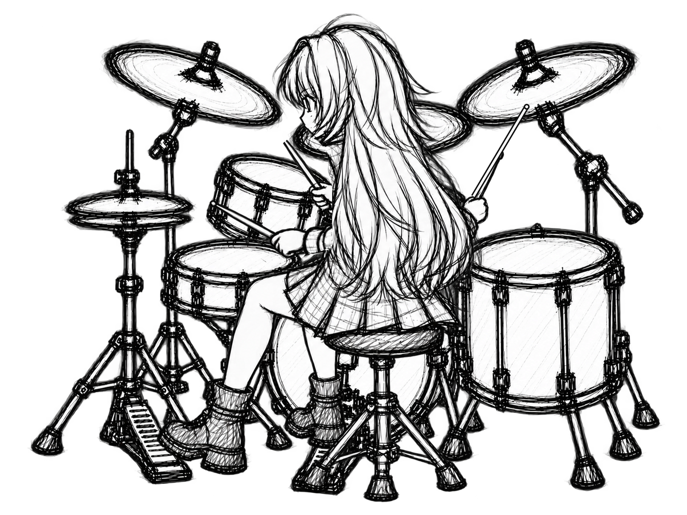

<!doctype html><meta charset="utf-8"><title>MOTION-004 v4 exact QA preview</title>
<style>body{font-family:sans-serif;margin:24px;background:#eee}figure{background:white;padding:16px;margin:0 0 24px}img{max-width:100%;height:auto;display:block}figcaption{font-weight:bold;margin-bottom:8px}</style>
<figure><figcaption>HIT fixed-drum composite</figcaption></figure>
<figure><figcaption>REBOUND fixed-drum composite</figcaption></figure>
<figure><figcaption>neutral → hit → rebound → neutral</figcaption></figure>